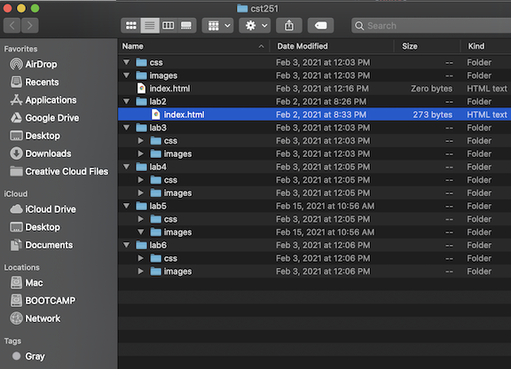
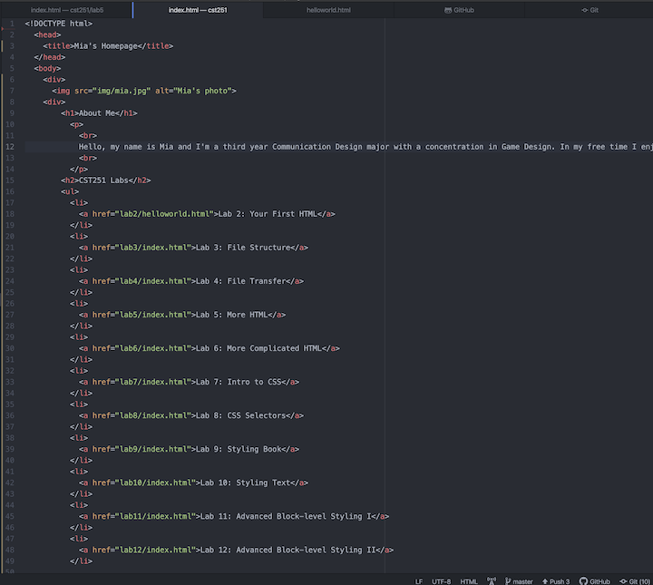
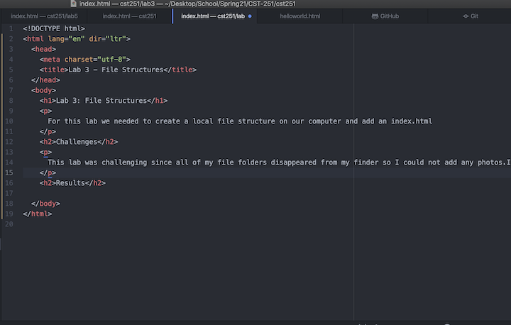

For this lab we needed to create a local file structure on our computer and add an index.html
This lab was challenging since all of my file folders disappeared from my finder so I could not add any photos.I eventually found the files by selecting "reveal in finder" on Atom.
Screenshot #1 - Create a local file structure
Screenshot #2 - Create an index.html in cst251 folder
Screenshot #3 - Create an index.html in lab3 folder
